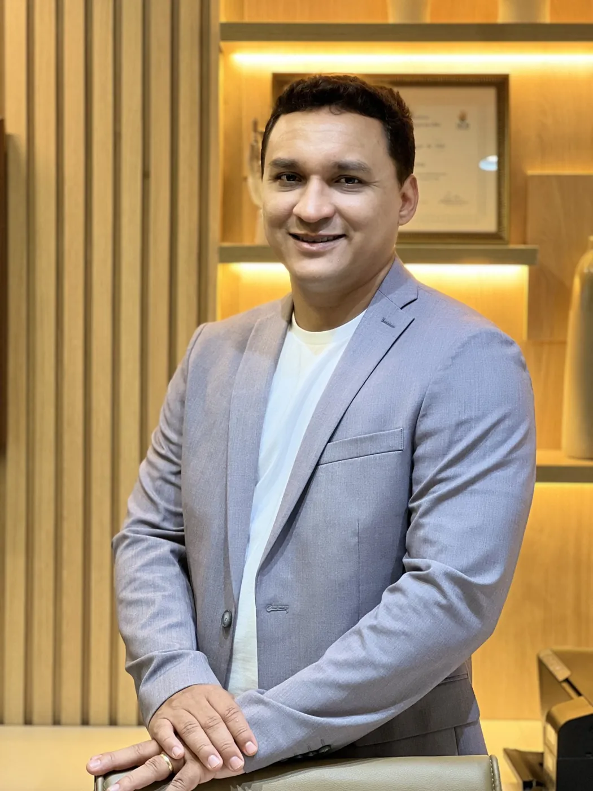
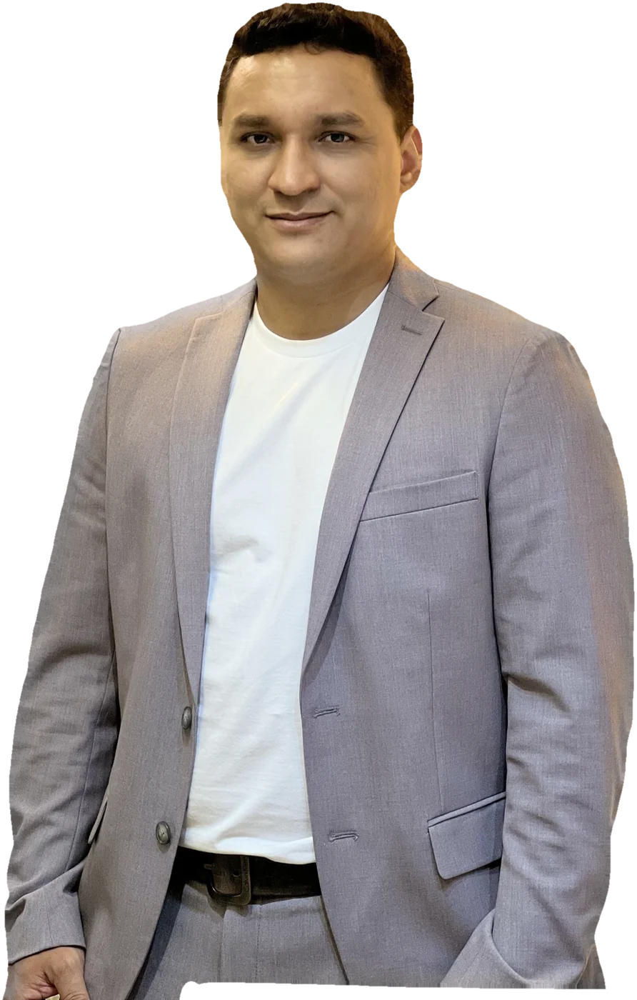

Dr. Denner Soares Lima · MÉDICO · CRM-PI 5948 · RQE 5206 · RQE 5207
Dor ou formigamento na mão? Consulta ortopédica com o Dr. Denner.
Formigamento, dor ou um dedo que trava merecem atenção. Na consulta com o Dr. Denner, você entende o que está acontecendo e quais são as opções para o seu caso.
Quero agendar minha consultaA conversa é pelo WhatsApp. Você tira suas dúvidas antes de marcar.
Dr. Denner Soares Lima · MÉDICO · CRM-PI 5948 · RQE 5206 · RQE 5207

A mão é a área em que ele se especializou
Residência em Cirurgia da Mão
Nem todo caso é cirurgia, e você entende o porquê
Primeiro a avaliação, depois as opções
Da consulta à cirurgia, com o mesmo médico
Quando houver indicação de procedimento
O que você tem sentido?
Nem sempre é só cansaço na mão
Esses sinais podem ter causas diferentes. Só uma avaliação médica pode dizer o que eles significam no seu caso.
- Formigamento ou perda de sensibilidade na mão
- Dor na mão que piora à noite ou chega a acordar você
- Incômodo ao dirigir, ler, digitar ou segurar o celular
- Fraqueza nos dedos ou dificuldade para segurar objetos
- Dedo que trava, estala ou fica preso ao dobrar
Se algum desses sinais faz parte da sua rotina, converse com um médico.
Da primeira conversa ao próximo passo
Um caminho claro desde o início
Fale pelo WhatsApp
Conte brevemente o que você sente e combine o melhor horário para a consulta.
Passe pela avaliação
O Dr. Denner ouve sua história, examina a região e, se necessário, solicita exames.
Entenda as opções
Você recebe uma explicação clara do quadro e das alternativas indicadas. A decisão é tomada com você.
Quem vai atender você
Dr. Denner Soares Lima
A mão e o punho são a área em que o Dr. Denner se especializou.
Na consulta, ele ouve sua história, examina a região e explica o que está acontecendo. Se houver indicação de procedimento, você entende o motivo e as alternativas antes de decidir.
Medicina pela Uninovafapi · Residências em Ortopedia e Traumatologia e em Cirurgia da Mão, em São Paulo · TEOT 17231 (SBOT)
MÉDICO · CRM-PI 5948 · Ortopedia e Traumatologia, RQE 5206 · Cirurgia da Mão, RQE 5207

Dúvidas comuns antes da consulta
Vou precisar operar?
Nem sempre. A indicação depende do seu diagnóstico e da evolução do quadro. Essa conversa acontece depois da avaliação.
Formigamento na mão pode passar sozinho?
Depende da causa. No túnel do carpo, por exemplo, o quadro tende a piorar sem tratamento. Se o sintoma continua ou volta com frequência, vale marcar uma avaliação.
A infiltração funciona para todos os casos?
Não. Ela é indicada para situações específicas, e o efeito pode ser temporário. O médico avalia se ela é uma opção para você.
Quais exames preciso levar?
Se você já tiver exames da região, leve-os à consulta. Se faltar algum, o Dr. Denner orienta o que pode ser necessário.
O Dr. Denner atende crianças e idosos?
Sim. O atendimento ortopédico é para todas as idades. A indicação de cada procedimento depende da avaliação.
Vocês atendem convênio?
A equipe informa as condições de atendimento pelo WhatsApp.
O próximo passo é entender o que está acontecendo
Fale pelo WhatsApp e agende sua consulta com o Dr. Denner.
Agendar pelo WhatsAppEm caso de dor intensa ou lesão recente, procure atendimento de urgência.
